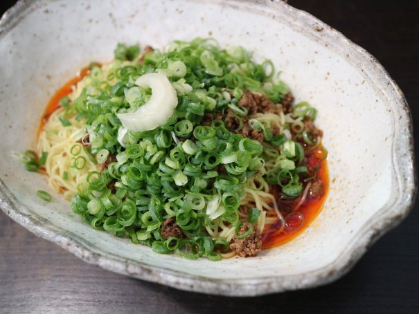
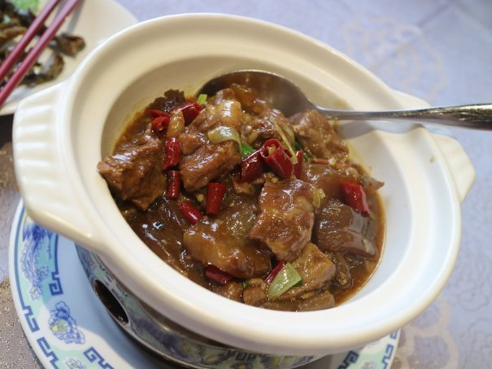

| The Sifted Vol.4: Episode 029-037 (Jp) (The BBB: Breakthrough Bandwagon Books) | |
| 秋月涼介 | |
| Lulu.com (2017) | |
Originally written in Japanese and translated by Ryosuke Akizuki
Photographs by Ryosuke Akizuki
Cover design by Tanya
C opyri ght © 2017 Ryosuke Akizuki / The BBB: Breakthrough Bandwagon Books
All rights reserved.
ISBN: 978-1-387-00974-9
「 The Sifted （ザ・シフティッド）」は、秋月涼介による連作ミステリー小説「 The Gifted （ザ・ギフティッド）」シリーズのスピンオフ作品です。著者が実際に訪れた実在のレストランの特徴や魅力について、「 The Gifted 」の主要登場人物たちと語り合うグルメ・リポートとなっています。
「 Gifted 」は「能力者」、「 Sifted 」は「ふるいにかけられたもの」を、それぞれ意味しています。
合わせてお楽しみいただければ、幸いです。
名前：ミロ・バルツァ（ Milo Baltsa ）
性別：男
年齢： 16 歳
身長： 168cm
瞳の色：碧
髪の色：白金
誕生日： 3 月 5 日
星座：魚座
血液型： AB 型
職業：高校二年生
好きなもの：ラーメン
* * *
名前：サヤ・トウマ（ Saya Touma ）
性別：女
年齢： 15 歳
身長： 164cm
瞳の色：濃い茶
髪の色：漆黒
誕生日： 10 月 14 日
星座：天秤座
血液型： O 型
職業：高校一年生
好きなもの：甘い物全般
* * *
名前：クロエ・ディレク（ Chloe Dyrek ）
性別：女
年齢： 24 歳
身長： 172cm
瞳の色：青
髪の色：明るい金
誕生日： 9 月 2 日
星座：乙女座
血液型： A 型
職業：旅行社勤務
好きなもの：白ビール、イタリア料理、中華料理（特に点心）
* * *
名前：リカルド・アルバーニ（ Riccardo Albani ）
性別：男
年齢： 32 歳
身長： 183cm
瞳の色：鳶色
髪の色：栗色
誕生日： 10 月 23 日
星座：天秤座
血液型： B 型
職業：ソフトウェア会社勤務（プログラマ）
好きなもの：酒（特にワイン）、パスタ（特にカルボナーラ）
* * *
名前：ヨマ・フィアルカ（ Yoma Fialka ）
性別：女
年齢： 15 歳
身長： 170cm
瞳の色：灰
髪の色：濃い金
誕生日： 7 月 2 日
星座：蟹座
血液型： A 型
職業：祓魔師（エクソシスト）
好きなもの：カレー全般（特にインドカレー、タイカレー）
* * *
※年齢と身長は、 The Gifted Vol.1 時点のものです。
ヨマ「ああ、悩む。悩んじゃうなぁ」
秋月「ヨマ、何を悩んでるの？」
ヨマ「お店の紹介の順序だよ。リョウだって、 Episode 17 の中華料理で悩んでたでしょ？今の私のストックの中には、日本と台湾のインドカレーとタイカレーがあるんだけど、前回が台湾のインドカレーだったから、次は、日本のタイカレーがいいのかなぁと」
秋月「そうだね。偏らないことを考えると、日本のタイカレーがいいんじゃないかな？」
ヨマ「でも、そうすると、次の紹介は、 15 週間後になるから、 3 ヵ月以上あとだよね？さらに、間にインドカレーのレビューを挟むと、半年後になっちゃう。それって、台湾でタイカレーを食べてから、一年以上経つことに――ちょっと遅すぎない？」
秋月「うーん、確かに遅いとは思うけど、この The Sifted のルール上、仕方ないと思うよ。毎回、気に入るお店に当たるとは限らないし、ストックは作っておかないと、紹介したいお店が無いってことにもなりかねないからね」
ヨマ「そうだよね。まあ、紹介までに、そのタイ料理屋さんの別のカレーを食べる機会があるかもしれないし、その カレーの方が、今まで食べたものより美味しければ更新できるよね？ね？ ね？」
秋月「それって、暗に、また台湾に連れて行けって、言ってる？」
ヨマ「もちろん！ だって、台湾には、まだまだ試したいカレーが、たくさんあるんだもん。そんな訳で、今回は、先に日本の小田原にある『 Lim Los Thai 』を紹介しておくね」
秋月「じゃあ、まずは、プー・パッ・ポン・カリーからだけど――」
ヨマ「これ、美味しいの！ まずは、見て、見て、見て、この鮮烈なオレンジ色！見てるだけで、食欲がそそられちゃう。ソフトシェルクラブと卵のレッドカレー炒めなんだけど、ふわっふわの卵の中に柔らかい甲羅の蟹が入ってて、その組み合わせが絶妙なの。普通は、渡り蟹を使うらしいけど、このお店は、殻ごと食べられるソフトシェルなのよね。蟹や海老って殻付きだと、殻を剥がすのに神経を使って、料理の味に集中できないことがあるんだけど、それが無いの。蟹を噛むと、ちょっとシャリっていう食感の後に、蟹の甘味が溢れ出してくるの。卵と一緒に口に含むと、卵の甘味と蟹の甘味の相乗効果で、幸せ感倍増だよ。あと、ふわとろの卵がするすると胃の中に落ちていく感じが、快感になっちゃう。今まで、あまり、ぐっと来るプー・パッ・ポン・カリーは食べたことがなかったけど、私の中では、理想のプー・パッ・ポン・カリーの一つの形に出会えた感じかな」
秋月「これからは、初めてのタイ料理屋に行くと、レッド、グリーン、イエローに加えて、プー・パッ・ポンの中からどれを選ぶか、悩みそうだよね」
ヨマ「うん、そうだね。その方が、私にとっては、重大な悩みになりそう......」
秋月「さて、次は、ゲーン・ペッ。鶏肉のレッドカレーだね。」
ヨマ「これは......、ちょっと個人的には、惜しい感じだったかな」
秋月「あれ、珍しく辛口だね？」
ヨマ「普通に美味しいんだけど、プー・パッ・ポン・カリーに比べると、衝撃が少ないの。私には、ココナッツミルクの味が少し強めに感じられて、マイルドな味わいだった。もう少し辛 味と旨味が増すと、より私好みになるのかもしれない。私のレビューって、基本、カレーだから、カレーの方を紹介しちゃったけど、私、このお店の他のメニューも大好きなのよね。ナムトック・ムー（豚肉のハーブ和えサラダ）とか、ラープ・ガイ（鶏ひき肉のハーブサラダ）の甘味、酸味、旨味、辛味のハーモニーが絶妙で、薫りも高くて、美味しさに痺れちゃう。もう、ホント、この二つは、病み付きになるよ。プー・パッ・ポンと、このサラダがあると、ご飯がいくらでも食べられて、まさに乙女の敵――」
秋月「あれ？ ちょっと待って、ヨマ。もう収録時間一杯だよ。あと１ 行しかない」
ヨマ「ええ？まだまだ、語り尽くせてないのに！ じゃあ、また、 13 週間後に会いま――」
-The End-
■ Lim Los Thai （リム・ロス・タイ）
https://www.facebook.com/limlosthai/
神奈川県小田原市前川 155-1
プー・パッ・ポン・カリー 1280 円（ライスは含まれません）
ゲーン・ペッ 980 円（ライスは含まれません）
※この物語は半フィクションであり、実在の人物や団体、出来事などと、多少関係があります。
秋月「ここ数年、広島では、何故か、汁無し坦々麺が流行ってて、もはや、ご当地グルメと言っても過言ではないくらいにお店が増えてるんだよね」
ミロ「まさに、気付いたときには、既にそうなってたって感じだね」
秋月「そうだね。広島市は、他に『陽気』に代表される豚骨醤油の広島ラーメンと、辛つけ麺が、ご当地ラーメンとして有名だけど、その中にあって、第三の勢力として、じわじわと、その版図を拡大している」
ミロ「なんだか三国志みたいに格好良く言ってるけど、広島ラーメンはともかく、本当に辛つけ麺が、二番目の勢力だったの？」
秋月「......いや、自分が食べた順序がそうだっただけで、自信は無い。確か、辛つけ麺を食べてた頃には、まだ汁無し坦々麺は無かったような気が......」
ミロ「リョウってさ、そういうところ、結構、いい加減だよね」
秋月「うっ......、すみません。ちょっと冒頭の話を盛り上げてみたかっただけです」
ミロ「それはさておき、今回、数ある広島の汁無し坦々麺の店から、『武蔵坊』を選んだわけだけど、それはどうしてなの？」
秋月「うーん、今まで、広島の汁無し坦々麺の専門店 5 軒で食べてみたけど、このお店が一番、自分の好みにあったので......」
ミロ「まあ、実際、遠いのに、このお店だけで、 5 回も通ってるよね」
秋月「新店の開拓か、このお店の再訪かで、迷うくらいハマってる......」
ミロ「その迷いの元になった汁無し坦々麺が、これだね」
秋月「『坦坦麺 濃厚胡麻』......これに、超ハマってる」
ミロ「辛さは、 1 辛～ 3 辛、そして、 200 円増しの DEATH から選択できる。辛味は、適度な方が良いから、ぼくは大抵、 2 辛を選択しているね」
秋月「私も、 2 辛だね。麺は細麺で、タレには、練り胡麻が混ざっている。その上に葱と挽肉が載っていて、これを箸でよく掻き混ぜてから、食べる。すると、濃厚な胡麻の味と薫り、辣油の辛味が渾然一体となって、口の中に溢れるんだ」
ミロ「この複雑で重層的な美味しさは、今までの他の店では、感じられないものだね。おそらく、リョウとぼくが練り胡麻が好きだからなんだろうね」
秋月「あ、確かに、そうかも。練り胡麻系の汁あり坦々麺も好きだもんね」
ミロ「あと、卓上には、青山椒、赤山椒、若山椒のミルが置いてあって、自由に色んな山椒の味と香りが足せるのが、いいよね」
秋月「そうそう。私、山椒好きだから、三種類総てを順番に振り掛けて、味と薫りを変化させながら、食べるのが楽しすぎる......」

ミロ「さて、次は、見た目は似てるけど、『坦坦麺 芳醇醤油』だね」
秋月「これが......私の中では、不思議なことに濃厚胡麻にちょっと及ばないんだよね」
ミロ「芳醇醤油も、確かに美味しいんだけど、ぼくも物足りなさを感じる。やっぱり、ぼくたちは、練り胡麻とスパイスの融合が好きなんだろうね。だからこそ、この店の『濃厚胡麻』を求めて、通いたくなる訳だ」
秋月「うん、そうだね。あの味は、全く飽きないね。何度でも食べたくなる」
ミロ「そういえば、この店には、『シンガポールナスカレー』なるカレーもあるよね」
秋月「これが......私にとっては、なかなか出会えない幻のカレーだったんだけど、初めての来店から、 2 年と 8 ヵ月目に、ようやく出会えたんだ。カレーの味は、ちょっと不思議で、練り胡麻の載ったキーマカレーみたいな感じだった」
ミロ「ヨマが聞いたら、なんで呼んでくれなかったのって、怒りそうだよね」
秋月「うん。なので、彼女には、内緒に――」
ヨマ「ミロの言う通りだよ！ なんで私を呼んでくれなかったの！私がそれを食べてたら、もっと深く解説してたのに！」
秋月「う、うわっ、出た！」
ミロ「......リョウ、祓魔師を幽霊みたいに言うのは、ちょっと、どうかと思うよ」
-The End-
■汁なし坦々麺 武蔵坊
https://www.facebook.com/musashiboooo
広島県広島市中区富士見町 5-12 田ビル 1F
坦坦麺 濃厚胡麻 600 円
坦坦麺 芳醇醤油 600 円
※この物語は半フィクションであり、実在の人物や団体、出来事などと、多少関係があります。
秋月「今回、和食ということで、初めて蕎麦を取り上げてみることにしてみたんだけど......」
サヤ「ん？ どうしたの？」
秋月「実は蕎麦って、あまり食べたことがないから、よく解らなくて......」
サヤ「あ、わたしは、それまで、一度も、蕎麦を食べたことがなかったよ」
秋月「だよね？ なので、事前に、食べログでポイントの高い近くの蕎麦屋さんを二軒ばかり巡ってみたんだけど、どうにも、ピンと来なくて......。そのどちらかを紹介してみようかと迷っていたところで、埼玉県の秩父にある、この『手打そば こいけ』の存在を知ったんだ」
サヤ「有名なお店だったんだよね？」
秋月「うん。蕎麦通の間では、伝説的なお店だったみたいだよ。しかも、その存在を知ったときには、店主が高齢で、閉店一週間前だったという......」
サヤ「もう、びっくりだよね。今、行くしかない、みたいな感じだったよね」
秋月「そうそう。そして、慌てて行って、食べて来たので――」
サヤ「残念ながら、こいけさんは、もう既に閉店しています。 閉店後のレビューとなりますが、閉店二日前の貴重な？ 写真です」
秋月「蕎麦喰いの素人として、何を注文するかで、かなり迷った挙げ句、まずは、三種類の蕎麦が味わえる『三色天もり』を注文してみた」
サヤ「伝説のお店......一番乗りだったし、緊張したよね」
秋月「ね......。でも、しっかり味わってきたよね。蕎麦は、左から、『田舎そば』、『せいろそば』、変わりそばの『けし切り』だね。田舎そばは、不揃いの太い蕎麦で、コシが強くて、もちっとしてる。せいろそばは、細打ちだけど、こちらも、しっかりとした弾力がある。けし切りは、芥子の実を更科粉に練り込んだ蕎麦らしく、白い表面に黒い粒が見える、つるっとした食感の蕎麦だったね」
サヤ「天麩羅は、海老二本、茗荷、茄子、獅子唐、隠元豆......だったかな？衣は、わりと薄めで、さくっとした食感だね。海老は、やや甘味があって、普通に美味しかったよね」
秋月「つゆは、ちょっと濃いめだけど、蕎麦をつけて食べると、かなり良い感じ。蕎麦自体の薫りは弱めだったけど、どの蕎麦も食感が良かったよね」
サヤ「うんうん。蕎麦湯は、透明な感じだったけど、最後につゆに入れると、濃いめのつゆの味がまろやかになって、とっても美味しかった」
秋月「......で、ここで、『かけそば』も食べておかないと、一生後悔すると思って――」
サヤ「思わず、追加注文しちゃったよね。ああ、ドキドキした......」
秋月「そして、出てきたのが、こちらだね」
サヤ「田舎そばの食感が良かったから、田舎そばのかけにしてもらったんだよね」
秋月「見て、これ。シンプルだけど、蕎麦が輝いて見えるよ」
サヤ「この食感が気持ちいいよね。つるっとしてるけど、もちっともしていて、喉に落ちるときが、何とも言えない感じ」
秋月「特筆すべきは、汁で......初めの一口は、ちょっと濃くて、辛いなって思ったんだけど、飲んでいくうちに、すごく旨味が感じられて、ぐいぐい飲んでしまう」
サヤ「なんだか、飲む手が止まらなかったよね。病み付きって感じで」
秋月「最後に、お茶を飲んだけど、口の中に旨味が充満していて、水を飲んでも、一時間経っても、全く消えないのが、すごかったね」
サヤ「いつまで、この濃い旨味を味わえるんだろうって思っちゃった」
秋月「いやぁ、蕎麦喰いの素人だけど、伝説の蕎麦、堪能しちゃったね」
サヤ「ねー。この体験は、記憶の中で美化されて、もう、一生、残っちゃうよね。......わたし、これで、もう、一生、お蕎麦を食べなくてもいいかも」
秋月「ええ？ も、もう、そんなところまでいっちゃったの！？」
-The End-
■手打そば こいけ 【閉店】
埼玉県秩父市野坂町 2-14-34
三色天もり 2500 円
かけそば 880 円
※この物語は半フィクションであり、実在の人物や団体、出来事などと、多少関係があります。
秋月 「さて、今回は、洋食ということで、茅ヶ崎にあるフランス料理、『シェ ヒャクタケ』に行ってきました」
クロエ「あたし、ここ、ずっと気になってたんだよねぇ」
秋月 「噂によると、かなり予約が取りにくい店みたいで、ちょっと躊躇ってたんだよね」
クロエ「噂って......単なる食べログ情報じゃないの？」
秋月 「ドキッ」
クロエ「......まあ、あたしが店に電話したときは、前日で一発 OK だったけどね」
秋月 「流石は、クロエ先生。実は、二回目も、前日で一発 OK だったんだよね」
クロエ「そうだね。まあ、アレだ。あたしらには、守護霊（ガーディアン・スピリッツ）が、憑いているからね。あたしが行くべき店は、予約も自然に取れるし、行く必要が無い店は、何度電話しても、予約が取れないってことだね」
秋月 「でも、それって、単なる『酸っぱい葡萄の理論』では......？」
クロエ「まあ、そう思ってる奴は、そう思ってればいいんじゃない？」
秋月 「私とか、有名ラーメン店に行ってみると、結構、臨時休業だったりするけど、あれは、行かなくてもいいお店だったのか」
クロエ「いや、それは、単にあんたの運が悪いだけだね」
秋月 「ええっ！？」
クロエ「じゃあ、まずは、『海の幸とお野菜のゼリー寄せ』からだね」
秋月 「この料理は、このお店のスペシャリテらしいね」
クロエ「それは、 2015 年度版ミシュランガイドからの情報だね」
秋月 「ドキッ」
クロエ「この料理、見た目が綺麗なんだよね。緑のバジルソースの海の上に、ゼリー寄せにされた透明感のある島が浮いている感じ」
秋月 「海の幸は、サーモン・真鯛・帆立貝・海老などで、野菜は、ブロッコリーとか、オクラが入ってるね」
クロエ「そして......このバジルソースが、あたし的に、好みのど真ん中だった。ややオイル感が強めだけど、バジルの峻烈な薫りと味が口の中に広がると、なんとも言えない至福を味わえる。美味しすぎて、脳幹の辺りが痺れるような感覚だったよ」
秋月 「そうなんだよね。主役のゼリー寄せが、絶品ソースの陰に隠れてしまうような感じだったけど、それだけ、ソースの衝撃が強かったってことかもしれない」
クロエ「これは、いつか、もう一度、食べておきたい一品だね」
秋月 「続いて、『フォアグラ、鴨、ドライフルーツのテリーヌ』だね」
クロエ「二回目の時の前菜だけど、これが、また......」
秋月 「美味しいんだよねぇ......」
クロエ「フォアグラが、ねっとりと濃厚で、甘味も強くて、マデラ酒のソースとも合う。ドライフルーツも、良いアクセントになってるよね」
秋月 「この料理ばかり、永遠に食べていたくなる感じ......」
クロエ「フォアグラのソテーも食べてみたけど、あたしはテリーヌの方が好みだね」
秋月 「それは、同意。このお店、前菜が秀逸すぎる......」
クロエ「それに、オープンキッチンだから、カウンター席の予約が取れれば、シェフと会話をしたり、調理の工程を見ることができて、楽しい」
秋月 「そういえば、私、魚料理や肉料理も気になるけど、毎回、数種類ある前菜の方が気になる......」
クロエ「お客さんの中には、数種類の前菜だけを食べていく人もいるらしいね」
秋月 「え？そんなのありなの？ じゃあ、次回は、前菜を全部制覇しよう！」
クロエ「......あんた、もう出費削減のこと、忘れてるだろ？」
-The End-
■シェ ヒャクタケ
http://syonan-style.com/chez_hyakutake/
神奈川県茅ヶ崎市共恵 1 丁目 1-7 小林ビル 2F
海の幸とお野菜のゼリー寄せ
フォアグラ、鴨、ドライフルーツのテリーヌ
( ディナーコース 5000 円～ 8500 円の中で、数種類の前菜から一つを選択 )
※この物語は半フィクションであり、実在の人物や団体、出来事などと、多少関係があります。
秋月 「今回は、台湾における六大料理のうち、江浙（こうせつ）料理のお店なんだけど......、実は、私、江浙料理の特徴は、よく解ってないんだよね......」
リカルド「確かに、ネットで調べる限りだと、海よりも河のものを優先するとか書いてあるが、具体的に江浙料理を解説してある記事は、無さそうだな」
秋月 「――というわけで、今回は、そんな謎の料理を出す『圓苑（ユアンユアン）』に行ってきました」
リカルド「......謎の一言で、片付けるなよ」
秋月 「まあまあ、それはさておき、このお店、台湾で有名な圓山（ユアンシャン）大飯店の中にあるんだよね」
リカルド「あの、中国の宮殿みたいに見える、巨大なホテルだろ？」
秋月 「そうそう。台北に行く度に、遠くに見えてて、ずっと気になってたんだよね。まさか、台湾の知人に連れて行ってもらえるとは思ってなかったので、車を降りた時には、ちょっと感動したよ」
リカルド「相変わらず、ミーハーだな。別に泊まった訳でもないんだし、そんなにはしゃぐなよ」
秋月 「いやいや、あのホテルのインパクトは、尋常じゃないよ。お店の外観の代わりに、ホテルの外観を掲載しようかと迷ったくらいだ」
リカルド「それなら、 The Sifted の Vol.4 が出るときに、おまけで写真を付ければいいじゃねぇか」
秋 月 「むっ、その提案、ちょっと惹かれるな......」 （以下がその写真となります）
リカルド「さて、まずは『無錫脆鱚（無錫淡水ウナギの揚げ物）』だな」
秋月 「......恥ずかしながら」
リカルド「ん、どうした？」
秋月 「この料理の名 前を初めて見たときに、「無錫（むしゃく）淡水ウナギ」って、何？ なんか怖い。錫（すず）が入ってない鰻ってこと？ということは、普通のお店の鰻には、錫が含まれてる可能性があるってこと？――と、かなり、びびってた」
リカルド「......華麗なる誤解だな」
秋月 「......うん。実際は、中国に無錫市っていう街があって、そこの名物の田鰻（たうなぎ）の揚げ物だったんだよね」
リカルド「英語だと、きちんと Wuxi Style って書いてあるな。 Wuxi が無錫市のことだな」
秋月 「で、料理の話に戻るけど、 この揚げ物、すごく薫りが良い。もう、芳しいって、こういうこと？ っていう感じだったね」
リカルド「田鰻は、ぱりっぱりに揚げられていて、食感が良かったな。それに香ばしさもあって、何とも言えない複雑な味だった」
秋月 「揚げ物なので、鰻の白焼きや蒲焼きとは、また違った味と食感が楽しめたよね」

リカルド「お次は『香辣牛 腩 煲 （辛いブリスケットの煮込み）』だな」
秋月 「ブリスケットは、牛の肩ばら肉のことみたいだね」
リカルド「また、編集長に辛そうだって言われそうだが、この料理、唐辛子が散乱しているわりには、そんなに辛くなかったよな」
秋月 「そうそう。それに、お肉が柔らかくて、弾力があって、食感が、かなり良いんだよね。美味しいから、ついつい、もっと食べたくなるんだけど、後から、何が出てくるか判らないから、ぐっと我慢したよ......」
リカルド「海外の中華料理店あるあるだな。確かに、最初から飛ばすと、あとで腹一杯になったときに、さらに気になる料理が出て来て、後悔することがあるんだよな」
秋月 「この日も、この後、九品出て来て、ちょっと苦しかった」
リカルド「それなのに、途中で、さらに『佛跳牆（フォーティャオチィァン）』を注文しようとして、用意に時間が掛かると言われて、断られた奴がここにいる」
秋月 「名店の味が気になって......、一人だと怖くて、注文できないし......」
リカルド「そう言いながら、いずれ、一人で注文しそうな奴も、ここにいるな......」
-The End-
■圓苑
http://www.grand-hotel.org/taipei/ja-jp/?Psn=5404
台湾台北市中山區中山北路四段 1 號
無錫脆鱚 620 元
香辣牛 腩 煲 620 元
※佛跳牆は、その薫りを嗅ぐと、修行僧ですらお寺の塀を飛び越えて来るという、高級食材をふんだんに使用した福建料理の伝統的な高級スープです。
※この物語は半フィクションであり、実在の人物や団体、出来事などと、多少関係があります。
秋月「さて、今回は、我らが欧風カレー師匠からのご依頼で、都内で見付けたカレーのお店だね」
ヨマ「私も東京駅近辺で色々調べて、口コミを見ながらかなり検討してみたけど......流石は師匠、有名どころは、既にほぼ押さえていたのが驚きだったよね」
秋月「だよね。とても地方在住の人とは思えない......」
ヨマ「でも、それって、リョウが台湾の人に、美味しい小籠包屋さんを教えてって言ったら、紹介される小籠包屋は、ことごとく行ってるのと似てるよね。台北に住んでないのに」
秋月「うっ......、確かに」
ヨマ「今は、私のせいで、台北のインド料理屋を巡ることになってるけど、それも、いずれ同じことになりそうだよね」
秋月「台北のインド料理屋に詳しい日本在住の人とか、マニアックすぎる......」
ヨマ「それはさておき、今回紹介するお店は『ロダン』だね。月曜日から土曜日までの 11 時から 15 時までしか営業していないという、地方在住者にとっては、食べに行くのが、少し大変なお店だね」
秋月「このお店、外観になんとも言えない味があっていいよね」
ヨマ「券売機も、お店の外にあって――そこでチケットを買ってから......いざ、店内へ！」
秋月「まずは、『特製ビーフカレー』だね 」
ヨマ「薫玉が半分ついているのを知らなかったから、薫玉をトッピングしちゃって......それで一個半になってます。カレーのルゥは、とっても濃厚で美味しい！突き抜ける感じは、そこまでないけど、安定した美味しさだよね」
秋月「確かに、少し独特な味のルゥだったね。そして、特筆すべきは――」
ヨマ「お肉ね！ あの牛肉が素晴らしくとろっとろだったよね。ビーフカレーって、ちょっと硬いお肉のことが多いけど、まさかの蕩ける食感で、私、感激しちゃった」
秋月「あと、チーズが少量、お皿に載ってたけど」
ヨマ「あのチーズが意外に濃厚で、私――」
秋月「そうそう、濃厚だったよね。チーズをトッピングすればよかったなって」
ヨマ「やっぱり、チーズトッピングだったよね。失敗したなぁ。そういえば――」
秋月「そういえば、薫玉も薫りが良くて、燻製の味もしっかり感じられたよね」
ヨマ「......リョウ、ちょっと黙っててくれないかな？」
秋月「ええっ？」
ヨマ「次は、『グリーン海老カレー』だね。『タイ料理店より美味しく仕上がりました』っていうフレーズに惹かれて、来ちゃった」
秋月「......」
ヨマ「見て見て、この緑！ まさしくグリーンカレーだよね。ライトグリーンじゃない！ソースの味はというと、野趣溢れるとか荒削りって感じかな？ココナッツミルク的なクリーミーさは、ほぼ無くて、辛いの。この刺激的な辛さと、濃いカレーの味がたまらない。これは、普通のタイ料理屋さんのグリーンカレーとは、ちょっと方向性が違ってて面白いなぁ。パクチーとも合うし、私、かなり気に入っちゃった」
秋月「......」
ヨマ「あと、具材は、ピーマン、筍なんかがごろごろ入ってて、海老も四尾、鶏肉の塊も二つ入ってる。ボリューム的にも、大満足だよね。リョウ、何か他に気になったところはある？」
秋月「......喋ってもいいの？」
ヨマ「うん。私、だいたい言いたいこと、言えたから、いいよ」
秋月「それなら......えっと、意外なことに福神漬けが、このグリーンカレーと合うんだよねぇ」
ヨマ「あっ、それ、私が言いたかったのに！」
秋月「ええっ！？」
-The End-
■ロダン
東京都中央区八丁堀 3 丁目 8-4
特製ビーフカレー + 燻製玉子 1000 円 + 100 円
グリーン海老カレー 1200 円
※この物語は半フィクションであり、実在の人物や団体、出来事などと、多少関係があります。
秋月「好きなラーメンのスープは、何ですか？ って訊かれたら......鶏白湯と豚骨で悩んじゃうよね？」
ミロ「いや、そこで、ぼくに同意を求められても困るけど。でも、リョウが、鶏白湯スープが好きなことは知ってるよ」
秋月「そうなんだよねぇ。好きなんだよねぇ」
ミロ「今回は、ぼくたちが鶏白湯スープにハマり始めた頃に見付けたお店だね」
秋月「そうだね。あれから、何軒も鶏白湯スープを求めて、彷徨ったけど、やっぱり自分の鶏白湯の原点は、このお店のスープなのかなって思うよ」
ミロ「という訳で、今回は東京の日暮里にある『麺酒処 ぶらり』だね」
秋月「この狸の置物がいい味出してるんだよねぇ。そして、入口が民家みたいで、初めて来たときは、ちょっと入る時に躊躇ったね」
ミロ「懐かしいね。そういえば、 The Gifted Vol.6 に出てくるシティのラーメン屋『弥勒』の鶏白湯塩は、ここのお店のラーメンを参考にしてるんだよね？」
秋月「スープの味と色は、そうだね。麺やトッピングは、別のお店から持ってきてる。って、まさか、こんなところで、裏話を語ることになるとは......」
ミロ「さて、最初は『鶏白湯らーめん』だね」
秋月「店内が暗いから、写真にスープの色が綺麗に出ないのが残念だね」
ミロ「スープは、綺麗な淡黄色なんだよね。鶏の出汁がよく出ていて濃厚で、ねっとりとした舌触りと、適度な塩味が、かなりいいバランスを保ってる」
秋月「も う、スープだけ、永遠に飲んでいたい感じ......。スープ、おかわり！ とか言いたくなるよ......」
ミロ「トッピングは、鶏チャーシュー、白髪葱、糸唐辛子、山クラゲだね」
秋月「......山クラゲって、写真の奥の方に写ってる緑のやつだよね？あれって、何？」
ミロ「ステムレタスっていう植物の茎だね。茎を細く裂いて、乾物にしたものを山クラゲって言うみたいだ。食感がクラゲに似ているかららしい」
秋月「ちょっとコリコリしていて、美味しいんだよね。他のラーメン屋では、見かけたことが無いトッピングだったね」
ミロ「さて、次は問題の『辛鶏白湯らーめん』だね」
秋月「これは......」
ミロ「思い出すと、恐怖が甦る？」
秋月「......お勧めの店なのに、恐怖ってどういうこと？ って読者から突っ込まれるよ」
ミロ「でも、これは、かなり予想外だったね」
秋月「私のイメージとしては、鶏白湯スープが、少し赤くなっているような感じだったんだ。あと、『鶏辛ちゃあしゅう』も、どんな物か知らずにトッピングしてみたんだけど......」
ミロ「まさか、こんなに唐辛子を纏った鶏肉が四つも入ってくるなんて、ね」
秋月「スープは、やっぱり美味しかったんだけど、食べていく内に、鶏肉が纏っている唐辛子がスープに溶けていって......気が付いたときには、怖いくらい真っ赤なスープになってたんだよね......」
ミロ「最後の方は、驚くくらい激辛になってたね」
秋月「あまりの辛さに、飲んでて、ちょっと泣きたくなってきたよ。未知のものを注文するときの素晴らしい教訓になったよね」
ミロ「いや、別にそんなに大した話じゃないと思うけど。単にリョウが迂闊だっただけだよね？」
秋月「え？ いや、そんな......、えーっと、そうですね、はい......」
-The End-
■麺酒処 ぶらり
東京都荒川区東日暮里 5 丁目 52-5
鶏白湯らーめん 780 円
辛鶏白湯らーめん + 鶏辛ちゃあしゅう 800 円 + 100 円
※この物語は半フィクションであり、実在の人物や団体、出来事などと、多少関係があります。
秋月「さて、今回は、この前、クロエと行ってきた『 VILLA DEL SOL 』に続く、静岡県、二軒目のお店だね」
サヤ「うん。沼津市にあって、朝 11 時半開店なんだけど、 10 時頃には、もう行列ができ始めるんだよね」
秋月「限定 25 食の『山正丼』を狙っているのか、みんな早くから並んでるよ。前回、来たときは、着くのが遅すぎて、『山正丼』が食べられなかったので、今回は、そのリベンジだね」
サヤ「前回の『五色丼』も美味しかったけど......でも、今回は、別の目的だよね？」
秋月「え？ な、なんのことかな？」
サヤ「『 JOJO と本屋さんは引かれ合う』でしょ？」
秋月「そ、そんな、『ジョジョの奇妙な冒険』ファンしか知らないようなことを、この場で言わなくても......」
サヤ「実は、あの時、なんだか、リョウが本屋さんで、こそこそスマートフォンをいじってるなぁって思ってたの」
秋月「......はい、その日は、中部地方の本屋で DIO 様の壁紙がダウンロードできる日でした」
サヤ「もう、子供じゃないんだから」
秋月「いやいや、 The Sifted の和食のために、沼津まで行ったんだよ。 DIO の壁紙は、そのついでというか......」
サヤ「まあ、そういうことにしておいてあげるね。というわけで、今回は、沼津の有名店『鮮魚・お食事処 山正』です」
秋月「さて、こちらが、二年前に食べ損ねた限定 25 食の『山正丼』だね」
サヤ「海鮮丼は、彩りが華やかでいいよね」
秋月「何が入っていたのか、はっきりとは覚えてないんだけど、見た感じ、鮪、鮭、蛸、烏賊、玉子、胡瓜、いくらかな。総てが、サイコロ状に切ってあって、タレで和えてある感じだったね」
サヤ「これをスプーンですくって、酢飯と一緒に口の中に入れると、味と食感が複雑に絡まりあって、美味しいの。鮪や鮭は柔らかく、蛸や烏賊には適度な弾力、そして、胡瓜のシャキっとした歯応え――」
秋月「黙々と食べちゃうよね......」
サヤ「うん......、黙々と食べちゃう......」
秋月「限定 25 食だから、早く行かないと食べられないのが、ちょっと大変だね」
サヤ「でも、他の『五色丼』や『三色丼』に挑戦するのも、いいなって思うよね」
秋月「続いて、『焼魚 天然ぶり 塩』だね」
サヤ「リョウって、鰤が好きだよね」
秋月「うん......。特に刺身が好きなんだよね。お鮨も、鮪と鰤と、どっちを選ぶかって問われると、かなり迷うね」
サヤ「でも、今回は、あえて焼き魚にしてみたの？」
秋月「実は、鰤カマを焼いたものも好きなんだけど――切り身だったね。味としては、脂が乗っていて、普通に美味しかったよ」
サヤ「このお店、ランチの時でも、造り、焼魚、煮魚、酒肴、椀と、色んなサイドメニューが注文できるからいいよね」
秋月「お鮨も、一貫から注文できるしね」
サヤ「じゃあ、また今度、新しい壁紙を獲るときに、来ないとだね」
秋月「いや、実は、もうキャンペーン期間は終わってるんだよね。残念ながら、中部ブロックは DIO しか獲れなかったよ」
サヤ「......やっぱり、壁紙が目当てだったんだ」
秋月「え？ あ......」
-The End-
■鮮魚・お食事処 山正
http://yamasho-japan.com/
静岡県沼津市平町 3-14
山正丼（限定 25 食） 950 円
焼魚 天然ぶり 塩 880 円
※この物語は半フィクションであり、実在の人物や団体、出来事などと、多少関係があります。
クロエ「さて、今回は、神奈川県小田原市の隠れ家的ビストロ『 Nantona 』だね」
秋月 「なんとな！？」
クロエ「......はいはい。それ、讃岐弁の驚きを表す感動詞なんだろ？早速、使ってみるとか――子供か」
秋月 「うっ......、それ、前回、サヤにも言われたな」
クロエ「いい大人が、子供に子供って言われて、どうするんだよ。まあ、それはともかく、お店は、小田急線の小田原駅と足柄駅の間くらいにあって、ちょっと電車だと行きづらいかもしれないね」
秋月 「どちらの駅で降りても、結構、歩くよね」
クロエ「しかし、あんた、よく、このお店を見付けたよな」
秋月 「元々行こうとしていたお店が満席で、その場で食べログを検索して見付けたんだけど、その時は、口コミが一件しか無かったんだよね。でも、その人が 5 点をつけていたから、気になって......」
クロエ「あの日は、見知らぬ暗い夜道を Google Map を見ながら、一緒に歩いたよなぁ。 GPS が無ければ、あたしは、お店まで辿り着けなかったかもしれない」
秋月 「それに予約もしてなかったし、ドキドキしながら、店の扉を開けたっけ」
クロエ「でも、『 GLICINE 』の時と同じで、お店に呼ばれたって感じはあったね」
秋月 「さて、一皿目は、『カマスのベニエ』だね。カマスは、地元、相模湾であがったものだったね」
クロエ「ベニエは、フランス語で、生地を油で揚げたドーナツみたいなものらしい。日本では、天麩羅が近いかもしれない」
秋月 「ちょっと身をひねって揚げてあるのがいいよね。お皿の上で、泳いでいるみたいで」
クロエ「背鰭を切った辺りに、やや緑色が見えるけど、魚の中には、ハーブが詰めてある。ファルスという調理法だそうだ」
秋月 「そして、これを傍にあるグリーンマスタードのソースで食べるんだけど、身がほくほくしていて、甘味があって美味しいんだよね」
クロエ「ハーブの味と香りも立っていて、鼻腔をくすぐるね」
秋月 「塩もいいけど、やっぱりソースかな。このお店、色んなソースが複雑な味がして、面白いんだよね」
クロエ「レシピが無くて、シェフが感性で作るから、偶に驚きの味に出遇うことがあるよな」
秋月 「二皿目は、『爽やかな夏野菜のソテーと熟成サーロイン』だね」
クロエ「別の日に食べた一品だから、お皿のデザインは同じだけど、コース料理だと、このお皿は、一回しか使われないみたいだな」
秋月 「こ、細かいところチェックしてるなぁ」
クロエ「いや、このお皿のデザインが好みだから、ちょっと気になってね。それはともかく、この熟成サーロインが、また美味しいんだよねぇ」
秋月 「そうなんだよね。肉の味も良いんだけど、火入れされた部分の脂が、やや尖った甘さになっていて、絶妙な美味しさだった。前に別の店で食べた本鮪大トロの焼き鮨に通じる脂の美味しさだったかも」
クロエ「熟成させた肉自体も、しっかりとした味わいだったな。あと、夏野菜は、少し甘味が控え目で、肉の脂をさっぱりと流すような仕掛けになっているらしい」
秋月 「いやぁ、このお店は、偶にスマッシュヒットが炸裂するからいいよね」
クロエ「そうだな。コース料理を注文すると、色んな料理が味わえて、お得感もある」
秋月 「肉料理やパスタが美味しいし、アラカルトでも、十分に楽しめそうだよね」
クロエ「いや、あんた、気になるものを際限なく注文しそうだから、アラカルトは禁止」
秋月 「なんとな！？」
-The End-
■ Nantona
神奈川県小田原市扇町 1 丁目 25-21 扇町プライムビル 102
カマスのベニエ
爽やかな夏野菜のソテーと熟成サーロイン
どちらもコース料理 5500 円～ 6000 円に含まれます。ワンドリンク制です。
※この物語は半フィクションであり、実在の人物や団体、出来事などと、多少関係があります。
***
（本書は、 The BBB: Breakthrough Bandwagon Books のために書き下ろされたオリジナル作品です）